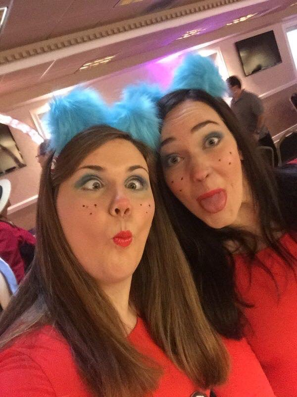

And a Computational Biology Major with a Certificate in Public Comunication in Science and Technology
5 and 10 year plan
Yes I am one of those people with a 5 and 10 year plan. In 5 years I want to be an Organ Transplant Specialist. In 10 Years I want to be 3D printing Organs. Yes you read that right 3D printing functional human organs.
Family and Home

I was born and raised in Pittsburgh, Pa. I have one half sister Audra who is 7 years older than I, and she also graduated from PITT! I have 2 awesome parents, Bonnie and Rich, who have put up with my busy lifestyle. My family is always active -normally traveling- whether it is sailing or hiking we are always on the move.
Entertainment
<<>>
This sums up my life in one video.
The media is a great documenter; because everything is perminant. Even that embarrasing baby photo that got posted is still out there is someone's cashe. Even the video your uncle took of your Granny before she died is still out there. The media as I would put it is a "Badly Good" thing. It is bad from the stand point of EVERYTHING is still out there. It is good becuase everything is still out there. Now a good thing about the media is it's perception. Those emparassing photos were probably taken down, so now one is activly seeing them. The photos will still be writen in code, but won't be active spread around.
Community
The people you around make up your community. Your community changes baised on your location and time. Most people don't think about the time portion and rather the geolocaitonal. I recently had an issue going into a community -in which i had been part of my whole life- and it has let me take a peek behind the curtain. A community isn't choosen. A community is a group of people in the same place at the same time.
School
I have work my butt off to get where I am today. In Kindergarden I was diagnosed legally blind. In First grade I was diagnosed with dyslexia and put into special reading, writing and speach groups. By Fourth grade I was out of all of those programs. In Seventh and Eight grade I was giving Distiguished Honors, and in Eighth grade I was given the Principals Award. In High School I never had a GPA lower than 4.0, and was taking only honors and AP courses. Junior year I had a 5 month long migraine that upended my life. I ended up switching to Cyber school in November until the end of the school year. I graduated on time with a 4.2 GPA, and even though my school did not tell students their rank I was definatly in the top 10% out of my 400 student class. Undergrad is at PITT and I have yet to decide if I need and or want to go to grad school.